5. Mount the Motherboard in the Case
The PC we're building a full-size motherboard in the ATX form factor. Depending on the case you picked, you might be dealing with a motherboard of a different size. See the image below ...
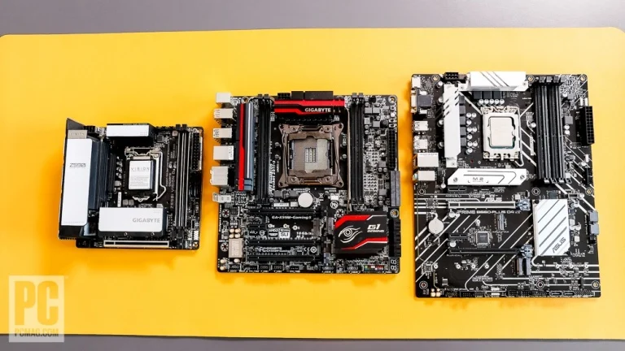
ATX is the most standard size motherboard for a tower or minitower PC. MicroATX is the next size down, suited to midsize chassis (some small towers, some other shapes). MicroATX boards tend to be the most cost-effective. The smallest popular board type, Mini-ITX, is strictly for very compact (dubbed small-form-factor or SFF) desktops, and these boards have premium prices. They also have just one main PCI Express expansion slot for a graphics card.Let's install our ATX board. Assuming your case is a typical midtower like ours, remove both of its side panels. With this case, you remove two thumbscrews on each panel and pop off the sides with your thumbs, like so ...
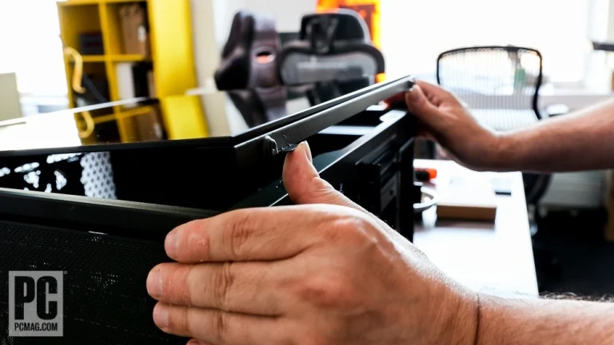
If either side has a glass panel, put it somewhere safe. Place the chassis on its side, with the big cavity that will take the motherboard facing up. The case will contain a jumble of cables connected to the front panel; route these aside so they're out of the way. You don't want any cables trapped under the board when you mount it.
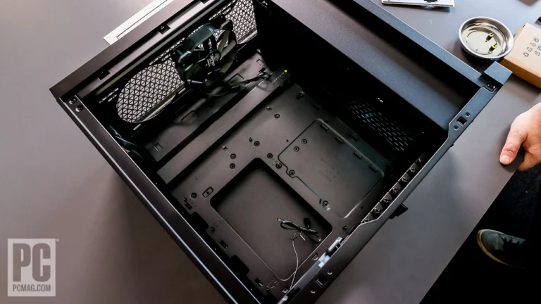
Inside the case, you'll see either preinstalled bits of metal with threaded holes (standoffs) or holes for installing such standoffs...
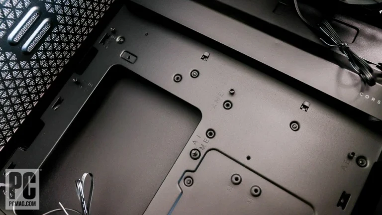
Look at your motherboard and match the pattern of holes on the board to the standoffs or standoff holes in the motherboard tray. If no standoffs are preinstalled, you'll need to install them in the same pattern in the case as on your motherboard. If standoffs are preinstalled, you need to make sure one is installed for each hole in the board and (this is important!) that no standoffs are installed where there isn't a matching hole in the motherboard.
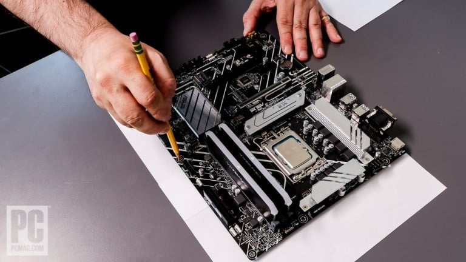
If your case doesn't have preinstalled standoffs, one time-tested trick is to get a large sheet of paper, cut it to the size of your motherboard, and use a pencil to trace the position of holes through the motherboard onto it.
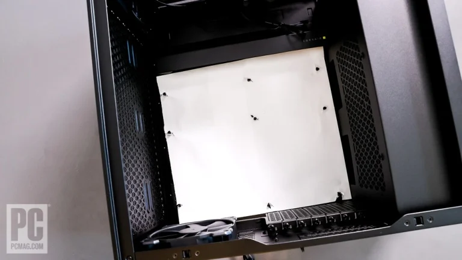
You can then position the paper inside the case and install standoffs or verify their positions by punching through the guide holes in the paper.
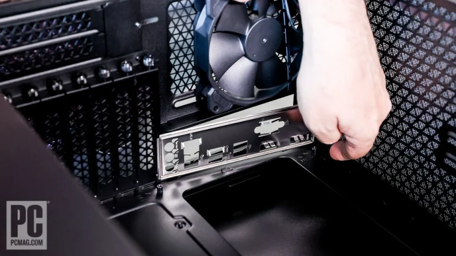
For an ATX board, you're looking at eight or nine holes; a MicroATX platform may have seven or eight, and Mini-ITX will have fewer. If you need to remove any standoffs that are preinstalled, use pliers. Some PC cases come with a hexagonal Phillips screwdriver bit in the accessory box to help you install or remove standoffs.
Every PC case includes packets of screws for various mounts; many come with three or four screw types used for motherboard mounting, fastening drives to cages, and more. Check your manual for the specific kind to use with the standoffs to mount the motherboard and sort them into your parts tray. Dry-fit one or two to make sure that you're using the proper screws; different types may look similar but not fit.
Before installing the board, you may have an additional step to do depending on its design. The motherboard box may contain a plate called the I/O shield or RF shield. It fits into the rectangular cutout in the back of the case and serves as a pass-through panel for the motherboard ports. Some modern motherboards incorporate the I/O shield into the board itself, attached to the ports cluster. But if the shield is a separate part, snap it into place now, right-side-up relative to the ports.
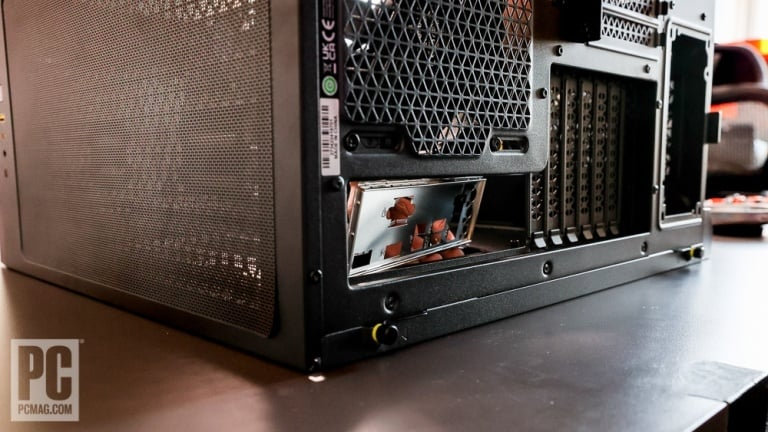
The I/O shield installs from the inside of the case, as you can see.
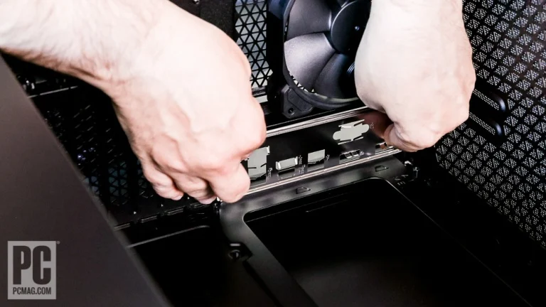
Sometimes the shields are sharp-edged metal, giving you a better chance of cutting yourself here than in any other step. Getting the shield to snap into place usually takes some force at the corners, one by one.
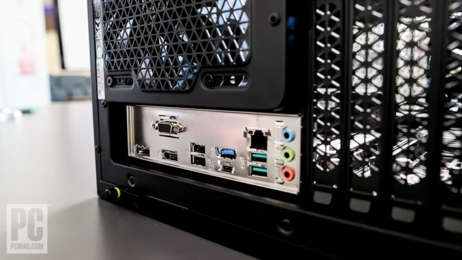
Once the plate is installed (it should pop when it snaps in), test-fit the motherboard to make sure the ports poke and show through the I/O shield properly.
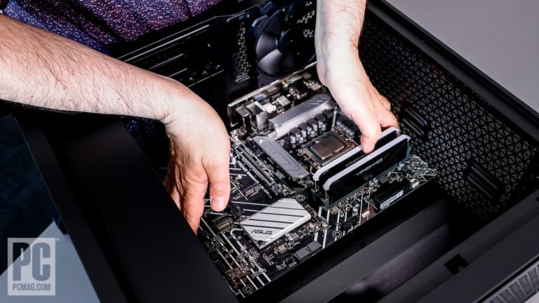
Finally, position the board with the ports facing the I/O shield and be extra careful not to trap any cables under it. Lower the board carefully into place. Don't scratch it on the standoffs, and check that you have a clear view into each port through the I/O shield if the latter was installed as a separate piece.
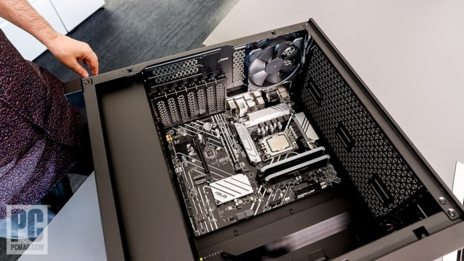
It's very easy to trap one of the tensioning tabs of the I/O shield inside an Ethernet, HDMI, or USB port, and you'll need to disassemble the PC to fix it if that happens. The port will be unusable or worse.
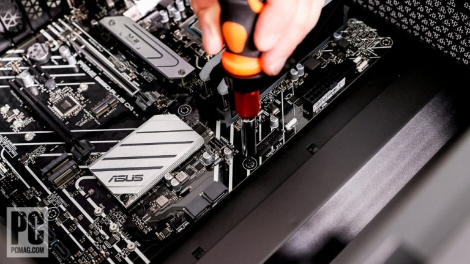
Each mounting hole in the motherboard should align with a standoff in the case.
Grab your magnetic screwdriver, a proper Phillips bit, and motherboard screws from the case kit and begin screwing the board into place. Start with the centermost screw, which will help the others line up, then do the far corners. (Sometimes the centermost screw position is actually a peg, which makes things easier.) Once you get the first few screws in, the rest should be easy. If the screws don't catch but simply rotate, you're using the wrong ones.
Once you've got a few screws in place, tip up the case and check that you have easy access to the rear of the motherboard through the CPU cutaway in the tray. You'll note we haven't talked about installing the CPU cooler yet, and in most builds you'll need access to the back of the motherboard to do that—you may need to install a bracket or plate behind the board. Almost all modern cases have generous openings to the four mounting holes around the CPU socket from beneath, but it never hurts to check before you get too far.
With the screws in place and the motherboard secure, the next step is the case wiring. These wires are fine and hard to access later in the build, so we'll get them out of the way here. Fetch your monocle or magnifying glass.